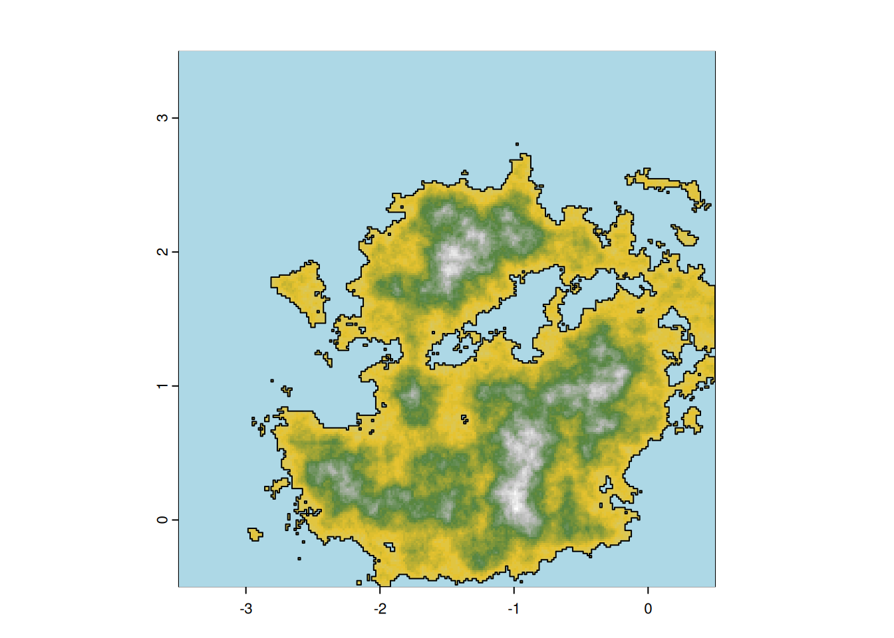
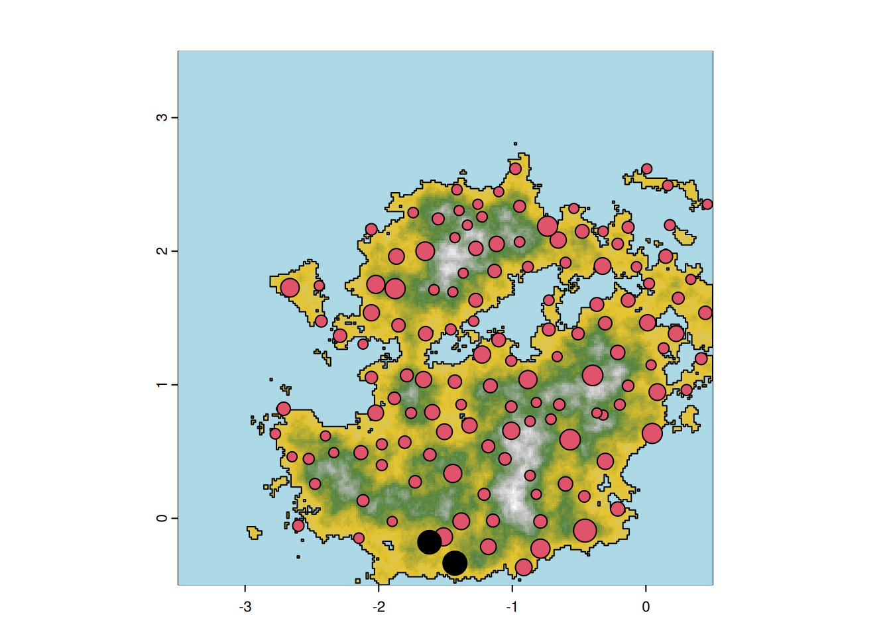
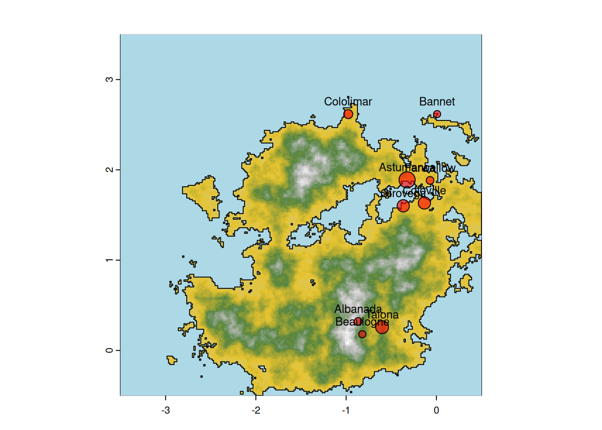
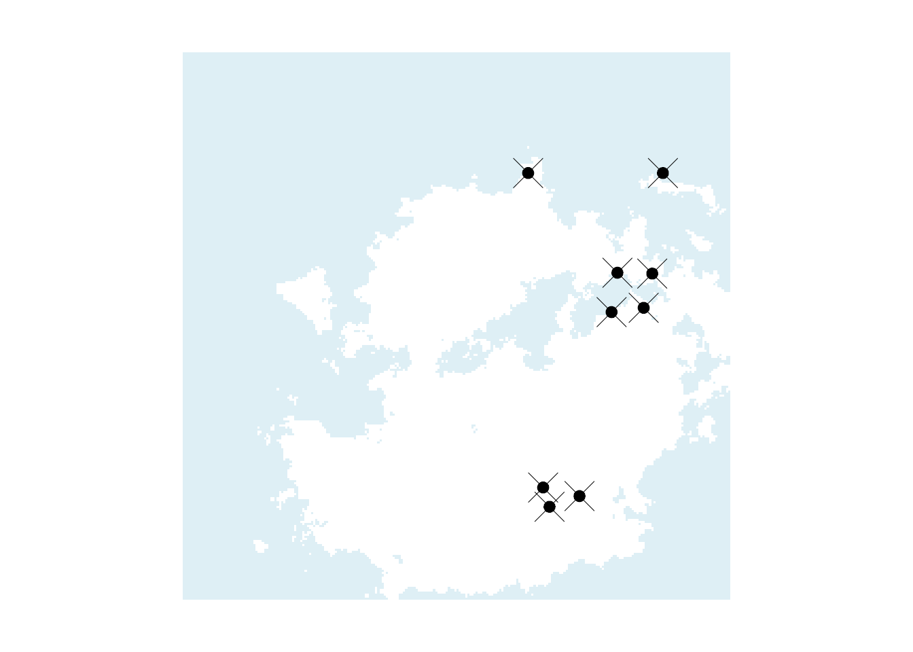
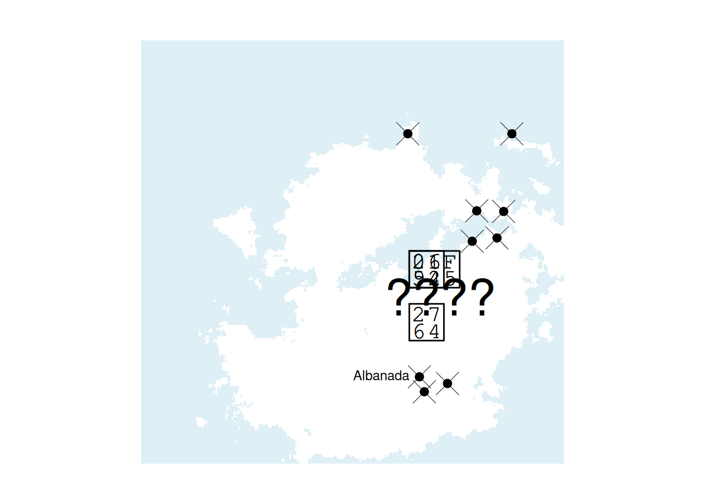
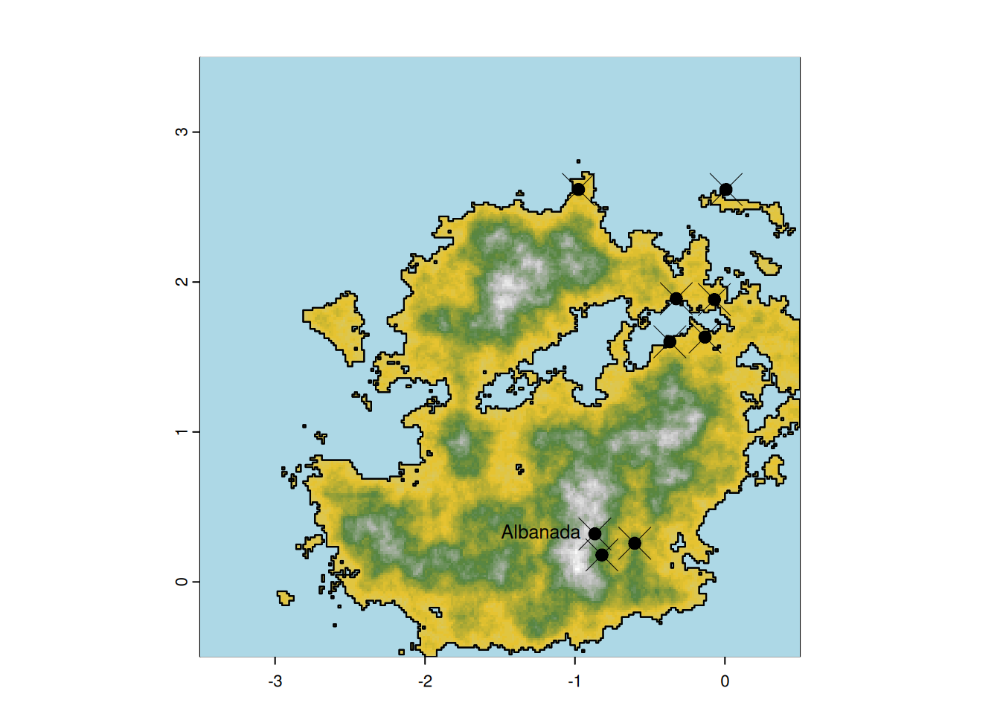
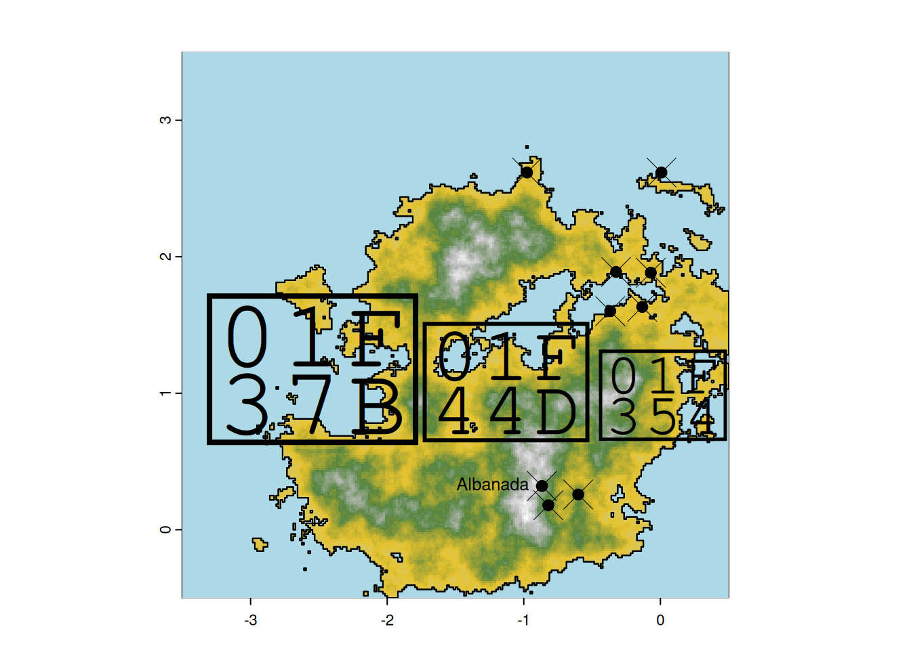

8 Generate final archaeological record
Now that all the pieces are in place we need to combine them to generate files that can be shared with people in order for them to guess the original parameters.
To summarize what we have so far:
- We simulated an artificial environment in Chapter 2.
- We localised sites on the map and defined a population growth process in Chapter 3.
- We defined rules to describe how population move and engage in conflict as they expand in Chapter 4.
- We simulated these process of growth, conflict and migration on the environement we designed, for extend periods of time in Chapter 5.
- We defined processes that use this simulated growth to generate an archaeological record in Chapter 6,
- We defined processes that transform this archaeological record using credible loss mechanisms 6.
Here we will use all these previous steps to generate csvs that can be shared. In this chapter we will use the simulation run in the Chapter 5 ; if you want to generated new ‘fake’-dataset, different from the one that have been presented in the original challenge and that will be described in the chapter 9, you will want to run longer simulation, and choose among different run on the looks interesting/realistic. We provide a script ./scriptmini.R that to give some idea about how to automatize these run and how to choose among them.
8.1 Using sites size to generate deposit
This has been done using file dateGeneration.R, we will describe it here now.
First we get the rasters defining the environment (If you followed the book since the beginning they should be already in memory but in case you didn’t we we reload them here:
height.ras <- rast(file.path("data_toshare","dem_raster.tiff"))
height.wat <- height.ras
height.wat[height.wat>mean(height.wat[])] <- NA
Nts <- readRDS("data_tmp/popSizeMatrix.RDS")
plotMap(height.ras,height.wat)
Using Rec_c , short_loss and long_loss, that we presented in the Chapter 6 & 7, we generate deposit. This can take long time if the simulation included a lot of sites, spanning over long period of time. Here we first generate all deposit from the matrix Nts generated during the simulation of the Chapter 5 and then apply all loss functions together:
#All in one:
alldeposit=lapply(1:ncol(Nts),function(s)Rec_c(sapply(Nts[,s],A_rates), InitBP = 7500,ts=nrow(Nts),r = 0.2, max_bone_thickness = "m"))
allLosses=lapply(1:length(alldeposit),function(ind){
Rec=alldeposit[[ind]];
Rec=apply(Rec,2,short_loss,.6) #apply short loss
Rec=long_loss(Rec,.9997,7500) #apply long loss
return(Rec)
})
rm(alldeposit)Once this is done, we have a list with all the potential dates available from all sites that have existed during our simulation. Realisticly, for any given site, not all the material will be recovered and even less of this material will be dated. To reflect that, we capped the maximum number of samples available per sites. To do so – and this was applied as is in the original challange presented in the Chapter 9, we assume that the biggest sites – the one with most media attention, most funding, will very likely get at most 30 dates. We thus subsampled the number of dates for smaller site given this ration of \(\frac{30}{n_{\text{largest}}}\). Here simulation have been greatly shortened, thus sites have way less samples. We thus cap the larges sites to have only 80% of the dates it generate, and sample the other sites using this ratio.
maxSites=max(sapply(allLosses,sum))
nsample=round(sapply(allLosses,sum)*(30/maxSites))
allRemainingDates=lapply(seq_along(allLosses),function(r)extractDates(allLosses[[r]],n=nsample[r]))
rm(allLosses) #object are big, need to free memoryWe then have a sample of date for every sites of our worlds; where the maximum number of dates is 30, for the biggest sites that existed in our simulation.
Let’s looks at where these date are available, we first retrieve all sites saved in the simulation from 5:
allsites=vect(file.path(foldtmp,"allsites.shp"))
if(class(allsites)[1] == "PackedSpatVector")
allsites=terra::vect(allsites)We can see where are the sites with more dates:
expname="exn"
plotMap(height.ras,height.wat,paste0("final after losses"))
plot(allsites,cex=3*(lengths(allRemainingDates)-1)/(29),pch=21,add=T,bg=rainbow(2,alpha=.6)[as.factor(allsites$culture[1:10])])
dates=unique(unlist(allRemainingDates))
dates=rev(sort(dates[!is.na(dates)]))
plot(table(unlist(allRemainingDates)))
totallDatesRemains=sapply(allRemainingDates,function(i)table(factor(i,levels=dates)))
saveRDS(allRemainingDates,file=file.path(foldtmp,paste0(expname,"_dates.RDS")))Figure 8.1: left: sites where dates are potentially available, size of the dot represent the number of dates, right: total number of dates by years
Loading dates:
Keep sites with foundable dates
foundsites=allsites[lengths(dates)>0,]
foundsites$numdates=unlist(lengths(dates[lengths(dates)>0]))
founddates=dates[lengths(dates)>0]Remove BP to the dates, add some random variation
stdpool=c(20,30,40,50,60,80,100,120)
founddates=lapply(founddates,sort)
founddates=lapply(founddates,gsub,pattern=" BP",replacement="")
founddates=lapply(founddates,rev)
founddates=lapply(founddates,function(i)paste0(i," ± ",sample(stdpool,length(i),replace=T,prob=c(3,3,3,3,2,2,1,1))," BP"))
foundsites$dates=sapply(founddates,paste0,collapse=" | ")
plotMap(height.ras,height.wat)
plot(foundsites,cex=foundsites$numdates/20+1,pch=21,bg=as.factor(foundsites$culture),add=T)
8.2 Provide survey square and publicly available dates
To then share these date we choose to split the environment in grids and extract date by grid. For each grid, a csv is generated with the sites that have been found and for each site, their geolocalisation and the dates found at the site.
leftdates <- dates[lengths(dates)>0]
plotMap(height.ras,height.wat)
plot(foundsites,cex=foundsites$numdates/20+.1,pch=21,bg=1,add=T)
squares <- st_make_grid(height.ras,.5)
squares <- st_bind_cols(squares,ID=1:length(squares))
## Warning in st_bind_cols(squares, ID = 1:length(squares)): Use 'cbind' instead when all arguments to be binded are of class sf.
## If you need to cbind a data.frame to an sf, use 'st_sf' or 'dplyr::bind_cols' (see the examples).
plot(squares,add=T,col=adjustcolor(rainbow(nrow(squares)),.35))
text(st_coordinates(st_centroid(squares)),label=squares$ID,col="white")
## Warning: st_centroid assumes attributes are constant over geometries
text(st_coordinates(st_centroid(squares)),label=squares$ID,col="white")
## Warning: st_centroid assumes attributes are constant over geometriesFigure 8.2: The black dots represent the sites for which dates are available, the size of the circle reflect the amount of dates available. each square represent an area that can be selected by the users.
In the archaoriddle original challenge we proposed to give the data from 4 grids that we selected oursleve to be sure the participants have a least some interesting information. Here we randomly pick up 4 squares with the only limits that they provide at least 5 settlements. You will want to change and manually population the vector selection in the chunk below to cover area with lot of sites and sites from differents cultures, from what can be seen in the Figure 8.2.
plotMap(height.ras,height.wat)
plot(foundsites,cex=foundsites$numdates/20+1,pch=21,bg=as.factor(foundsites$culture),add=T)
selection=sample(1:nrow(squares),4)
inter <- st_intersection(st_as_sf(foundsites),squares[selection,])
## Warning: attribute variables are assumed to be spatially constant throughout
## all geometries
while(nrow(inter)<5){
selection=sample(1:nrow(squares),4)
inter <- st_intersection(st_as_sf(foundsites),squares[selection,])
}
plot(squares[selection,],add=T,col=adjustcolor("blue",.3))
plotMap(height.ras,height.wat)
plot(st_geometry(inter),add=T,bg=rainbow(2,alpha=.6)[as.factor(inter$culture)],pch=21,cex=1+inter$numdates/10)Figure 8.3: Left: square publicly available ; right: sites surveyed within these publicly available squares.
8.2.1 Giving name to the publicly available data
On the original challenge we used: fantasynamegenerators.com to choose nice, randomly generated name, to name the sites publicly available. You will see in the section 9.3.3 that we positionned them with cultural relevent group, although this has no impact on the results. Here we took all the name we had for the original challenge to randomly assignate some for you custom world.
site_dist=st_distance(inter)
potname=c("Farwallow" ,"Bearcall" ,"Dustscar" ,"Clearreach" ,"Rabbithole",
"Épibéliard" ,"Cololuçon" ,"Pulogne" ,"Haguemasse" ,"Auriteaux" ,"Bourville" ,"Banau" ,"Montnesse" ,"Bannet" ,"Alenlon", "Roullac" ,"Genneville" ,"Vinlès" ,"Antonnet" ,"Courtou" ,"Beaulogne" ,"Coloville" ,"Sarsart" ,"Soilon" ,"Cololimar","Zava" ,"Catadrid" ,"Tegon" ,"Alicia" ,"Mulid" ,"Zararbella" ,"Malid" ,"Cásca" ,"Granalejos" ,"Segorez" ,"Terteixo" ,"Astumanca" ,"Galle" ,"Talona" ,"Girovega" ,"Albanada" ,"Nadoba" ,"Senca" ,"Vallanca" ,"Taville")
u=0
while(length(potname)<nrow(inter)){
u=u+1
potname=c(potname,paste0(potname,u))
}
sitesnames=sample(potname,nrow(inter))
inter=cbind(inter,sitesnames)
plotMap(height.ras,height.wat)
plot(st_geometry(inter),add=T,bg=rainbow(2,alpha=.6)[as.factor(inter$culture)],pch=21,cex=1+inter$numdates/10)
text(st_coordinates(inter),inter$sitesnames,cex=.8,pos=3)
8.2.2 Export and download dates
Export csv and data for each public square
for(g in selection){
curr=inter[inter$ID==g,]
coords=st_coordinates(curr)
write.csv(file=file.path("data_toshare",paste0("square_",g,".csv")),cbind.data.frame(sitename=curr$sitesnames,lon=coords[,1],lat=coords[,2],dates=curr$dates,economy=curr$culture))
}The csvs generate for this specific run of the bookdown can be download for each square:
Export csv and data for all ever square
allsites=st_intersection(st_as_sf(foundsites),squares[-selection,])
## Warning: attribute variables are assumed to be spatially constant throughout
## all geometries
for(g in (1:nrow(squares))[-selection]){
curr=allsites[allsites$ID==g,]
coords=st_coordinates(curr)
write.csv(file=file.path("data_tmp",paste0("square_",g,".csv")),cbind.data.frame(lon=coords[,1],lat=coords[,2],dates=curr$dates,economy=curr$culture))
}
ld=strsplit(inter$dates," \\| ")
ld=lapply(ld,function(i)gsub(" ± .*","",i))
inter$start=sapply(ld,max)
inter$end=sapply(ld,min)The csvs generate for all squares can be downloaded here
8.3 Bonus maps
Some maps we use and did for fake papers and social media etc…
## plotting oldschool map
par(mar=c(0,0,0,0),oma=c(0,0,0,0))
plot(height.wat,col=adjustcolor("light blue",.4),reset=F,legend=F,axes=F)
contour(height.ras,levels=seq(5,300,15),axes=F,ann=F,lwd=.1,labels="",bg="light blue",add=T)
plot(st_geometry(inter),pch=4,add=T,lwd=.3)
plot(st_geometry(inter),pch=20,add=T,lwd=.2,cex=.8,col=as.factor(inter$culture),alpha=.8)
old=inter[inter$start>7180,]
ne=inter[inter$start>6800 & inter$end<6900,]
plot(height.wat,col=adjustcolor("light blue",.4),reset=F,legend=F,axes=F)
contour(height.ras,levels=seq(5,300,15),axes=F,ann=F,lwd=.1,labels="",bg="light blue",add=T)
plot(st_geometry(old),pch=4,add=T,lwd=.5,cex=3)
plot(st_geometry(old),pch=20,add=T,lwd=.2,cex=1.8,col=as.factor(old$culture),alpha=.8)
plot(height.wat,col=adjustcolor("light blue",.4),reset=F,legend=F,axes=F)
contour(height.ras,levels=seq(5,300,15),axes=F,ann=F,lwd=.1,labels="",bg="light blue",add=T)
plot(st_geometry(inter),pch=4,add=T,lwd=.5,cex=3)
plot(st_geometry(inter),pch=20,add=T,lwd=.2,cex=1.8,col=as.factor(inter$culture),alpha=.8)
plot(height.wat,col=adjustcolor("light blue",.4),reset=F,legend=F,axes=F)
contour(height.ras,levels=seq(5,300,15),axes=F,ann=F,lwd=.1,labels="",bg="light blue",add=T)
plot(st_geometry(inter),pch=4,add=T,lwd=.5,cex=3)
plot(st_geometry(inter),pch=20,add=T,lwd=.2,cex=1.8,col=as.factor(inter$culture),alpha=.8)
plot(height.wat,col=adjustcolor("light blue",.4),reset=F,legend=F,axes=F)
contour(height.ras,levels=seq(5,300,15),axes=F,ann=F,lwd=.1,labels="",bg="light blue",add=T)
plot(st_geometry(ne),pch=4,add=T,lwd=.5,cex=3)
plot(st_geometry(ne),pch=20,add=T,lwd=.2,cex=1.8,col=as.factor(ne$culture),alpha=.8)

More maps for twitter:
plot(height.wat,col=adjustcolor("light blue",.4),reset=F,legend=F,axes=F)
contour(height.ras,levels=seq(5,300,15),axes=F,ann=F,lwd=.2,labels="",bg="light blue",add=T)
plot(st_geometry(inter),pch=4,add=T,lwd=.5,cex=3)
plot(st_geometry(inter),pch=20,add=T,lwd=.2,cex=1.8,col=as.factor(inter$culture),alpha=.8)
sel=inter[c(20,2,15,36),]
text(st_coordinates(sel),sel$sitesnames,cex=.8,pos=c(1,2,2,4))
text(x = -1, y = .7, labels = "❤️", adj = c(0, 0), cex = 3, col = "black", font = 1)
text(x = -1, y = 1.2, labels = "🔥 ", adj = c(0, 0), cex = 3, col = "black", font = 1)
text(x = -1, y = 1.2, labels = "⚔️ ", adj = c(0, 0), cex = 3, col = "black", font = 1)
text(x = -1.2, y = 1.8/2, labels = "???? ", adj=c(0,0), cex = 3, col = "black", font = 1) More maps!! (the coolest)
plotMap(height.ras,height.wat)
contour(height.ras,levels=seq(5,300,15),axes=F,ann=F,lwd=.2,labels="",bg="light blue",add=T)
plot(st_geometry(inter),pch=4,add=T,lwd=.5,cex=3)
plot(st_geometry(inter),pch=20,add=T,lwd=.2,cex=1.8,col=as.factor(inter$culture),alpha=.8)
coastline=st_cast(st_as_sf(as.polygons(height.ras>mean(height.ras[])))[2,],"MULTILINESTRING")
plot(coastline,add=T,lwd=1.1,col="black")
sel=inter[c(20,2,15,36),]
text(st_coordinates(sel),sel$sitesnames,cex=.8,pos=c(1,2,2,4))
plotMap(height.ras,height.wat)
contour(height.ras,levels=seq(5,300,15),axes=F,ann=F,lwd=.2,labels="",bg="light blue",add=T)
plot(st_geometry(inter),pch=4,add=T,lwd=.5,cex=3)
plot(st_geometry(inter),pch=20,add=T,lwd=.2,cex=1.8,col=as.factor(inter$culture),alpha=.8)
coastline=st_cast(st_as_sf(as.polygons(height.ras>mean(height.ras[])))[2,],"MULTILINESTRING")
plot(coastline,add=T,lwd=1.1,col="black")
sel=inter[c(20,2,15,36),]
text(st_coordinates(sel),sel$sitesnames,cex=.8,pos=c(1,2,2,4))
#text(x = -1, y = .7, labels = "🍻", adj = c(0, 0), cex = 3, col = "black", font = 1)
text(x = -3.4, y = .7, labels = "🍻 ", adj = c(0, 0), cex = 10, col = "black", font = 1)
text(x = -1.8, y = .7, labels = "👍 ", adj = c(0, 0), cex = 8, col = "black", font = 1)
text(x = -.5, y = .7, labels = "🍔 ", adj = c(0, 0), cex = 6, col = "black", font = 1)